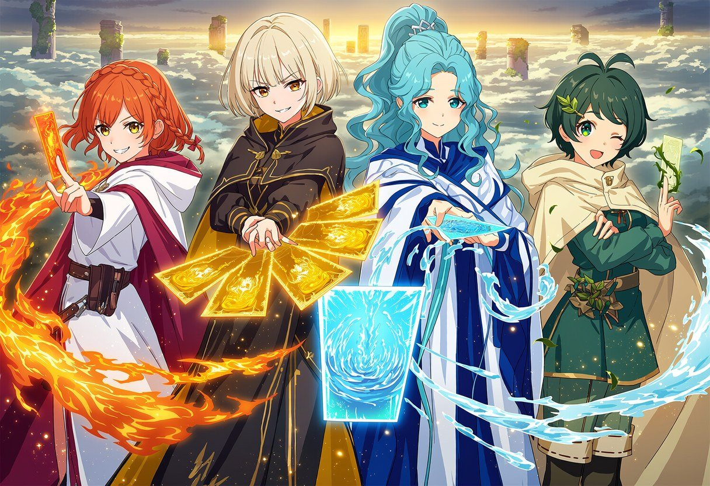
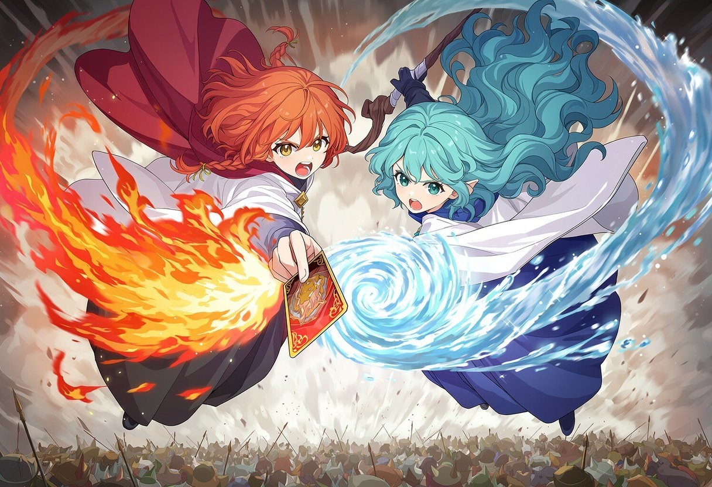
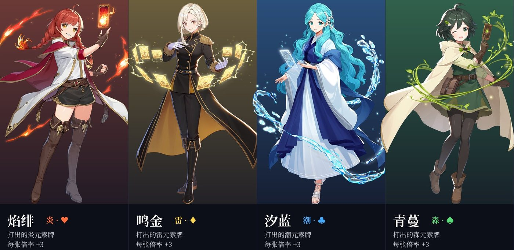
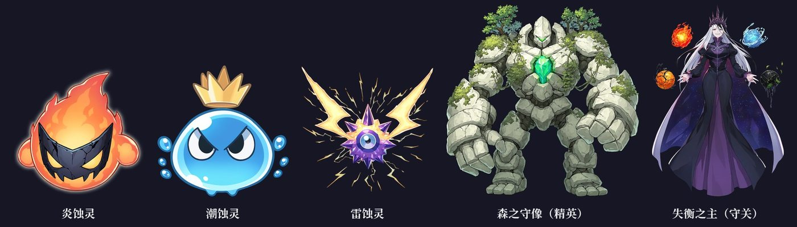
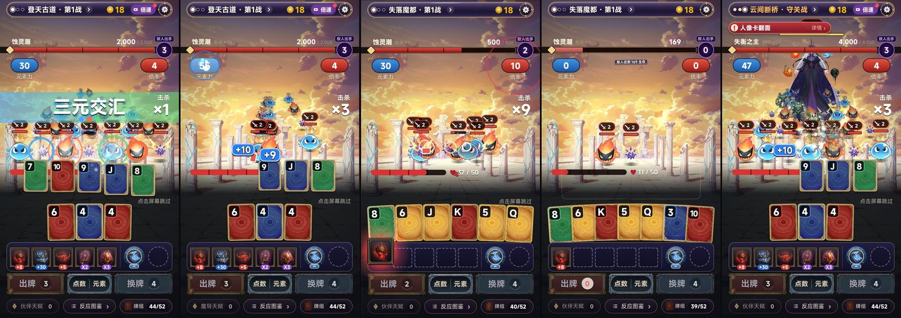

zwluoqi/EmberCards2 里改。厂商 FIRE工作室（507397）。
| 看什么 | 情况 |
|---|---|
| 「源神」是什么 | 原神玩家圈的谐音梗（「源神，启动！」），TapTap 搜「源神」，联想词里直接出「原神」，第一条结果就是《原神》 |
| 审核 | TapTap 的规则禁止和知名游戏名称近似、蹭热度。「源神」+ 原神式二次元 + 元素反应，三样叠在一起，很难说成是巧合 |
| 维权 | 米哈游对仿冒《原神》名字和美术的产品一向会投诉、起诉；被下架，前期投入就白做了 |
| 搜索 | 「源神」的流量全被《原神》本体吃掉，新游戏排不上，导不到量 |
我的建议：保留你名字里的「元素牌」，把「源神」换掉。按团队「题材词 + 品类大词」的规则：
| 名字 | 说明 |
|---|---|
| ①《元素牌：源初反应》（推荐） | 保留「元素牌」和「源」字；「元素牌」关注 160 万，标题里 0 款 |
| ②《元素肉鸽：万象反应》 | 「元素肉鸽」关注 1,223 万，标题里 0 款；直接说清是肉鸽 |
| ③《源初：元素牌》 | 最接近你原来的名字，但不和《原神》撞字形 |
如果你坚持用《源神：元素牌》，我照做，但建议提审前先找法务看一眼。
同样不能抄的：原神的七元素体系、原神的反应名（蒸发、融化、超载、感电、冻结、扩散、结晶、绽放等）、「神之眼」「提瓦特」「七神」这些专有名词，以及任何原神角色的外观。下面的设定全部是原创的：四元素、六种反应的名字、角色、敌人。我们对标的是画风品质，不是它的设定。
对标的是什么：二次元赛璐璐（清晰的线条加两到三层明暗）、明亮通透的天空、元素特效发光、角色辨识度靠「发色 + 服装主色 = 元素色」。
在原神基础上往上提的地方（原神是 3D，二代是 2D 竖屏，所以把力气花在 2D 能比它更好看的地方）：
| 提什么 | 原神 | 二代 |
|---|---|---|
| 角色立绘 | 3D 模型为主，2D 立绘只在抽卡页出现 | 每张伙伴牌都是全身大立绘，带轮廓光、体积光和元素粒子；伙伴栏、商店、图鉴里一直能看到 |
| 反应演出 | 反应时冒一个字加特效 | 双人反应切入：两位伙伴同框出招（见下图「蒸腾」）；大牌型全屏演出 |
| 敌人 | 写实一点的魔物 | Q 萌的「蚀灵」，表情夸张，一群一群地倒，割草时更爽 |
| 色彩 | 偏柔和的高饱和 | 每种元素一个主色（炎橙红、雷金黄、潮青蓝、森翠绿），牌、伙伴、特效、敌人全部统一，一眼就分得清 |

出图方式：用团队的 NovelAI V5 出二次元立绘和演出图（每张 3 到 5 秒，一周额度够出上千张），用团队图片服务出商店宣传大图。
| 一代 / 小丑牌的东西 | 二代叫法 | 说明 |
|---|---|---|
| 四种花色 | 四元素：♥ 炎、♦ 雷、♣ 潮、♠ 森 | 牌面底色就是元素色（实机已换） |
| 点数 | 元素强度 | 不变 |
| 牌型 | 反应的档位：元素弹（高牌）、元素反应（对子）、双重反应（两对）、三重共振（三条）、连锁反应（顺子）、元素爆发（同花）、复合反应（葫芦）、四象归一（四条）、极元爆发（同花顺） | 伤害照旧由牌型算 |
| 这一手的花色组合 | 反应名和特效：炎+潮 蒸腾、炎+雷 爆燃、炎+森 燎原、潮+雷 链电、潮+森 萌发、雷+森 雷藤；三种 = 三元交汇；四种 = 元素归一；只有一种 = 炎之击 / 纯炎爆发 | 纯表现，不改分数（实机已做） |
| 小丑牌（一代叫装备） | 伙伴（角色） | 5 个格子 = 5 人小队。常用的约 30 件做成角色，其余做成「器物」 |
| 「打出红桃 / 方片 / 梅花 / 黑桃，每张倍率 +3」这 4 件 | 四位元素伙伴：焰绯、鸣金、汐蓝、青蔓 | 一一对应，原样搬过来 |
| 星球牌（牌型升级） | 共鸣石 | 升级某种反应 |
| 塔罗牌 / 幻灵牌 | 符文 / 禁咒 | |
| 小盲注 / 大盲注 / Boss 盲注 | 蚀灵潮 / 精英潮 / 元素领主 | 一代 Boss 的「某花色无效」直接变成「炎之领主：炎元素牌被吸收」，非常自然 |
| 金币 | 源晶 | |
| 第 8 关最终 Boss | 失衡之主 |
战斗方式沿用 v7（照《吸血鬼爬行者》）：敌人一排排站、前排亮出攻击意图；你的血量 = 剩余出牌次数；出一手没清完，前排就反击。

| 伙伴 | 元素 | 人设 | 技能（一代原装备） |
|---|---|---|---|
| 焰绯 | 炎 ♥ | 冒失热血的少女牌术师，赤橙双麻花辫，白外套配红披风 | 打出的炎元素牌每张倍率 +3 |
| 鸣金 | 雷 ♦ | 冷静的贵族，铂金短发，黑金军装大衣，一手展开五张雷牌 | 打出的雷元素牌每张倍率 +3 |
| 汐蓝 | 潮 ♣ | 温柔的潮汐巫女，及腰青蓝卷发，白蓝长袍 | 打出的潮元素牌每张倍率 +3 |
| 青蔓 | 森 ♠ | 活泼的森林游侠，墨绿短发戴叶子发卡，奶白斗篷 | 打出的森元素牌每张倍率 +3 |


实机录屏（34 秒，游戏自己出牌，故意用弱开局，能看到反应、击杀、敌人反击、战败）：
| 文件 | 改动 |
|---|---|
scripts/ui/crawl.lua |
换皮开关 PAINT_THEME = "yuan"：浮岛战场、蚀灵、守关；按打出牌的花色报反应名，在敌群里按元素颜色炸开范围特效；♠ 牌面换青绿 |
scripts/ui/words.lua |
用词换成元素反应体系：元素力 / 倍率、反应图鉴、伙伴、源晶、炎雷潮森…… |
scripts/ui/magicboard.lua |
敌人名字「蚀灵潮 / 失衡之主」 |
scripts/main.lua |
打开 v8；改回 "crawl" 就是 v7 扑克地牢 |
assets/image/yuan/ |
战场、三种蚀灵、精英、守关、森元素牌底 |
scripts/game/ |
一行没动，768 个测试全部通过 |
| 项 | 现状 | 要做的 |
|---|---|---|
| 伙伴栏 | 还是一代的装备图标 | 换成伙伴头像牌，点开看全身立绘 |
| 双人反应切入 | 只有概念图 | 打出两种花色、且两位对应伙伴都在队里时，放 0.8 秒的双人切入 |
| 伙伴数量 | 4 位 | 首发 12 位（每种元素 3 位），其余装备先做成器物 |
| 界面皮肤 | 顶栏、按钮还是一代的紫金样式 | 换成白金配元素色的二次元界面 |
| 牌面 | 一代的元素底纹 | 换成带元素图腾的新牌面 |
| 别的界面 | 商店、结算、选关还是一代的 | 换皮，加看板娘 |
| 守关倒数 | 只站着 | 失衡之主头顶四颗元素珠，打一种元素亮一颗，全亮她就出手 |
| 版本 | 题材 | 结果 |
|---|---|---|
| v7 | 扑克地牢（战斗照《吸血鬼爬行者》，实机） | 战斗框架保留，换成 v8 的皮（旧文档：docs/v2/立项方案_v7.md） |
| v6 | 调色师（实机切片） | 没有正常战斗的体验 |
| v5 | 乐队 / 调色 / 烟花（概念图） | 选了调色 → v6 |
| v4 | 新怪谈 / 深海 / 地府 | 和玩法不搭、画风低 |
| v3 | 仙门降妖 | 题材不新、页游感 |
| v2 / v1 | 武侠 / 末日 | — |